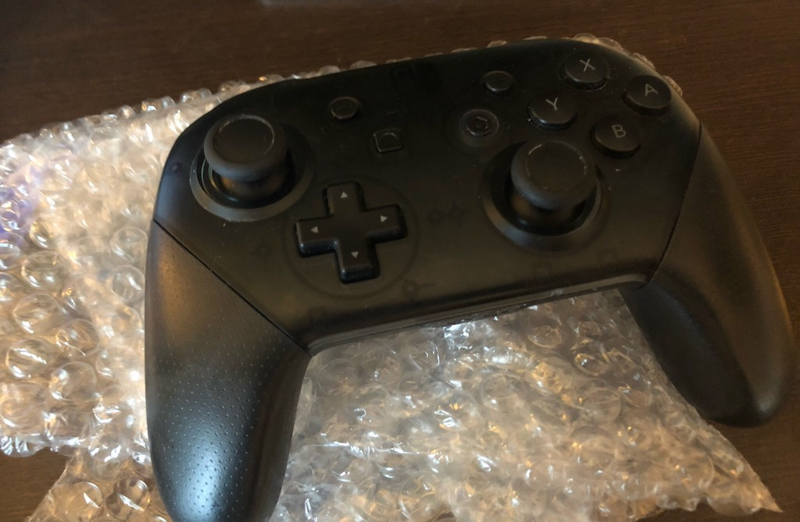
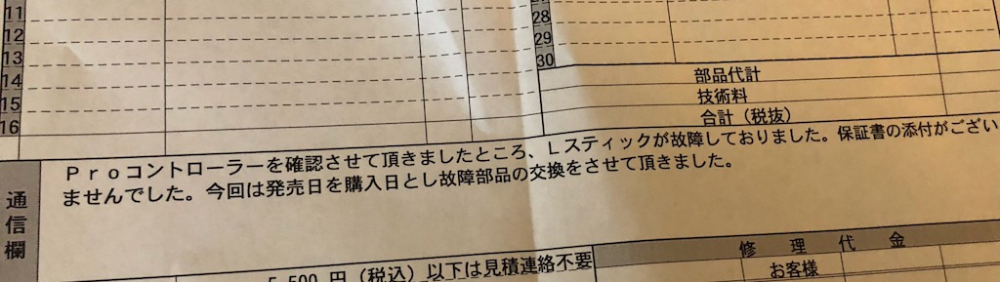

もう少し若ければ「ニンテンドースイッチのコントローラーを修理に出した結果ｗｗｗｗｗｗｗｗｗｗｗｗ」
みたいなタイトルにすることができたかもしれない
こわれる（こわれた）
Nitendo Switchを購入して約1年、ゼルダ400時間、マリオ100時間、スプラトゥーン500時間ぐらい。
総プレイ時間が1000時間経ったあたりでプロコンの左スティックの挙動がおかしくなった。
イカ移動がやたら遅くなってセルフイカニンジャ状態。
戦犯待った無し。
どでもづらいので修理に出すことに
保証書はあったほうがいい
タンスの引き出しを線形探索したが見つからない。見つからない。
保証書はしっかり保存する人間なので無いはずがないのだが、ないのでないということなのだろう。
思い返すと64もゲームキューブもウィーユーも、コントローラーが壊れるなんてことは無かった。
周辺機器だから壊れたら買い直せばいい、ぐらいの気持ちできっと油断していた。
形あるものは壊れるということがよくわかる。保証書はあったほうがいい。
そうだ。京都に送ろう
だいたいこんな感じ
- インターネット上で個人情報と症状、修理代上限を書いて修理票pdfを生成
- ダンボールに修理票とコントローラーをぶちこむ
- サポートセンターに送る。保証期間外だと送料自己負担
修理代金の目安を見るとプロコンは4000円ぐらい。
買い直しと対して変わらず、やはり保証書はあったほうがいいことがよくわかる。
待つ
1-2週間かかるとのことだったが、3-4営業日ぐらいで修理完了した。
同様の症状で修理に出してるブログ記事を何個か見つけたので、「あ〜またこの故障ね、」みたいな感じで手っ取り早く処理されたのかもしれない。もしくは日頃の行い。
帰ってきた

っきっったねえ手垢が残った状態で帰ってきた。
紛れもなくハイラルを救ったコントローラーである。
気になる修理代

！！！！！！！！！！！
完全に修理代を払う覚悟でいたら発売日から遡って購入日扱いにしていただいた。
発売日は2017/3/3なので、たしかに1年以内で保証期間内。
(´･ェ･｀)「あ、もしもし任天堂さん？ぅゅだけど…うん、そうぷんぽぷんぽ」
と言うつもりでいたが、こう対応されてしまうとぷんぽすることもできない。
任天堂を許すな。
ちなみにコントローラーは朝届いたのですが、
勢いでちょっとスプラトゥーンしてたら会社に遅刻してしまいました。（完）